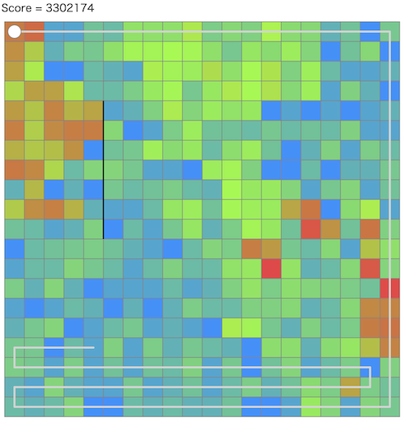

HACK TO THE FUTURE 2024(AHC027)¶

問題概要¶
- N * Nマスのグリッドがあり、単位時間ですべてのマスについて定義された汚れやすさd(i,j)に対応して汚れがたまる
- 掃除ロボットは、原点から出発し、単位時間で隣接するマスに移動でき、移動したマスの汚れを0にできる
- すべてのマスを1回以上訪問して原点に戻ってくるような経路のうち、平均汚れができるだけ低くなるような経路を生成せよ
時間¶
- 216 時間
個人的メモ¶
- 強い貪欲法を見つけるか、初期解を作って経路の破壊再構築による局所改善するのが強かった模様
どうやったら平均汚れを減らせるか？¶
- 直感的には、汚れがたまる前に何度もマスに訪問すると平均汚れを抑えられそうに思われる
- 汚れが溜まりやすいところは頻繁に掃除し、そうでないところは低頻度でという経路が考えられる
- しかし、何度も訪問するために(汚れが溜まっている遠いマスを掃除しに行こうとして)経路長が長くなると、訪問できていない他の多くのマスで汚れが溜まってしまい、平均汚れが下がるとは限らない
各マスの平均汚れ¶
- 上記を式で考える
- 平均汚れは、各マスiごとに見ると(Σを入れ替えると)、\sum_{i} \frac{1}{L} * \sum_{t} a_{t,i}なので、1マスごと独立に考えられる
- あるマスiにc_i回等しい時間間隔で訪問する場合を考えると、経路長をLとして、\frac{L}{c_i}時間分の平均汚れになるので、平均汚れは\frac{1}{2} d \frac{L}{c_i} = \frac{dL}{2c_i}になる
- したがって、平均汚れを減らすためには、できるだけ(等しい時間間隔で)そのマスに何回か掃除しにいくと平均汚れを抑えられる
- 等しい時間間隔でない場合は、長くなる時間間隔の方でその平均汚れも悪化するので、経路全体での平均汚れも悪化する
訪問回数の見積もり¶
- 汚れやすさdのマスに対して、どの程度の訪問回数/周期で掃除するとよいかを考える
- 単純化して、「マス間の移動時間はかからない(ワープできる)」「等間隔で訪問できたとする」などで考えると、各マスの訪問回数を考えるだけで良い
- Lは、全マスの訪問回数の和
- スコアは、時間が等間隔になるよう訪問するようにした場合で求める
- これは山登り/焼きなましなどで求める(＆結果から関係を推測する)こともできるし、解析的に導出もできる
- ラグランジュの未定乗数法(解説放送)
- 求めたいものは、マスiにt_i時間に1回訪問するとして、min \sum{\frac{d_i t_i}{2}}, s.t. \sum{\frac{1}{t_i}}=1
- マスiの平均汚れを最小化したい
- マスiにt_i時間に1回のペースで訪問するため、あるマスiにいる確率としては\frac{1}{t_i}で、グリッド全体で合計が1になる必要がある
- 経路長をlとして、マスiにはt_i時間に1回いないといけないので\frac{l}{t_i}回で、すべてのマスで合計l回になるようにする必要がある
- ラグランジュ関数L=\sum{\frac{d_i t_i}{2}} - \lambda (1- \sum{\frac{1}{t_i}})として、偏微分する
- \frac{\partial L}{\partial t_i} = \frac{1}{2} d_i - \lambda (\frac{1}{{t_i}^2}) = 0
- t_iについて解くと、t_i \sim \frac{1}{\sqrt{d_i}}となり、\frac{1}{\sqrt{d}}に比例する時間で訪問するのがよいことがわかる
- 求めたいものは、マスiにt_i時間に1回訪問するとして、min \sum{\frac{d_i t_i}{2}}, s.t. \sum{\frac{1}{t_i}}=1
- コーシーシュワルツの不等式
アプローチ¶
汚れが溜まっているマスを掃除にしに行く貪欲¶
- 単純に汚れやすさdをそのまま使って、一番汚れが溜まっているところを掃除しに行く貪欲(一気に移動/1マスずつ)や、平均汚れが一番大きい経路を繰り返す貪欲などではあまりうまくいかない
- 汚れやすい(dが大きい)マスの汚れがすぐ溜まってしまうため、汚れやすいところだけをまわるループになってしまったりしやすい
- うまく未訪問マスに行くように分散させたいが、結構難しい
- 上記の「周期の見積もり」を使うと、\frac{1}{\sqrt{d}}に比例する程度の時間で訪問すると良いことがわかるので、実際の汚れはd * \frac{1}{\sqrt{d}} = \sqrt{d}に比例する程度溜まったら掃除するのがよいとわかる
- なので、汚れのたまり具合をdではなく\sqrt{d}にして考えて貪欲法をすると、かなり良い結果が得られる
- 正確には、汚れを\sqrt(d)に置き換えたうえで、「そのマスまでの最短経路上で掃除できる汚れの量の平均が一番高くなるマス」に向かって移動するような貪欲、とかが強い
- 雑に「一番汚れが溜まっているマスへ汚れを考慮しない最短経路で移動」とかだと全然良くならないっぽいので、結構気をつけて実装しないと良くならない
- dを\sqrt{d}で割るのではなく、現在のそのマスの訪問回数で割ったもの、で考えるのも有効な模様
- dfsでN手先まで見たときに一番汚れが落とせるマスに動く貪欲、なども有効？
汚れやすさでグループ分けして、周期的に訪問する¶
- 汚れやすさdによっていくつかのグループを分けて、汚れやすいところは高頻度に、汚れにくいところは低頻度に訪問することを考える
- できるだけ同じ周期で訪れるほうがよいので、そのように順番を考える
- 「周期の見積もり」からおおよその訪問回数を決めて、その回数訪れる
- グループa,b,cなら、a->b->a->c->a->b->a->c->...のようにする
- 「周期の見積もり」からおおよその訪問回数を決めて、その回数訪れる
- dに対して階層にして、グループサイズを2ベキ(1,2,4,8,...)で考える構成しやすい(解説放送)
- 高頻度を1グループ(a)、中頻度を2グループ(b,c)、低頻度を4グループ(d,e,f,g)とすると、a->b->d->a->c->e->a->b->f->a->c->g->...のようにする
近接マスでグループ分けして、グループ内をTSP、グループ訪問順を最適化¶
- dについて、ある程度固まっている場合が多い
- なんらかマスをグループに分割して、それぞれのグループを訪問することを考える
- 白黒画像とみなして、フィルタなどでスムージングしたりなどでグループ化
初期解を作って、経路を局所改善¶
- 上位の多くはこちらの方法だった模様
- 初期解をビームサーチや上記のグループ分けなどで作成して、その後、経路の部分破壊再構築(評価値は生スコア)をする
- DFSなどで構築
- 部分パスを置き換える
- ループの反転
- など
- 高速化
- 経路の長さが同じ場合は経路外のマスの平均汚れは変わらない
- 曲がり角だけ改善、とか
- 枝刈り
- 破壊する経路の長さを数個程度(長さ6とか)に限定(ただし、壁を回れない場合などのために時々長いのも必要みたい)
- など
- 経路の長さが同じ場合は経路外のマスの平均汚れは変わらない
- 差分計算
- dequeを使う方法
- https://twitter.com/ethylene_66/status/1733797464216674310
- https://twitter.com/rho__o/status/1733791495298461793
- https://twitter.com/rho__o/status/1733795801581957476
- https://twitter.com/besukohu/status/1733791690870464742
- 経路(マスの列)を
deque<マス>で持つことを考え、1マスの{push,pop}_{front,back}操作を考える - マスiに対してスコアを計算する場合は、そのマスの前の訪問時間と後の訪問時間が分かればいいので、これを各マスごとに
deque<相対位置>(全マス分)で管理 - push/popするマスについては、訪問時間をこのマスのdequeの前後から取れば計算できる
- push/popしたマス以外の汚れも変化するためそれらのスコアも考える必要があるが、全部のマスの現在の区間での汚れd*tの和などを持っておくと、差分をO(1)で計算できる(はず)
- 基本、先頭の何要素かに対して操作変更の近傍を試す
- 経路列をrotateすることで、(相対)位置をずらせる
- 前向き・後ろ向きで計算しておいて中間地点を差分計算するテク
- dequeを使う方法
すべてのマスを通るようなパスの生成(初期解生成)¶
- 初期解などのために、簡単にvalidな経路を生成したい
- 探索回数が稼げない場合、良い初期解から始められると改善する可能性がある
DFS木(サンプル)、向きの乱択¶
- サンプルの作り方(DFS木)
- 左手法/右手法？
- サンプルのDFS木のパスを乱択にすると別のパスが得られる
貪欲解¶
- 上のアプローチの貪欲解を使う
ビームサーチ¶
- 隣接マスへの移動を遷移として、訪問済みマス数などでビームを何回かうって、最後に調整
- 未訪問マスのdは底上げするなどで未訪問マスを訪れやすくするなどの工夫も必要みたい
貪欲に追加¶
- 大きいdのグループから、現在のパスで一番スコアがよい挿入位置に入れる
- 挿入したあとにパスを2倍にすると2ベキで考えられる
その他¶
経路¶
- マス(隣接)の列
- 経由マスの列
- 経由マス間は最短経路などで補間
パスを2倍(倍化)する¶
- パスをコピーして2つつなげる
- 2倍以外も2^n倍とか
- パスが短い場合、スコアを維持したまま、解の変更のしやすさを上げれる可能性がある
- 半分時間がたったタイミング(1秒)でこれを入れる感じの人が何人かいた模様
橋/関節点¶
- 橋/関節点は2回(行きと帰り)は通る必要がある
- 壁に囲われていて出入り口がそこしかないようなところ
二重頂点連結成分分解による区画内一筆書きできるかの簡易判定¶
スコアの下限を使って正規化スコアを見る¶
- https://www.terry-u16.net/entry/httf2024
- Nや汚れやすさによってスコアが結構大きく違っているが、下限値を求めている場合は、それを使って正規化して考えられる
乱数生成の高速化¶
rand() % mで、mod計算が重いので、ビットシフトにして(ll)rand() * m >> 32にする- https://twitter.com/ethylene_66/status/1733880896909197728
- https://www.pcg-random.org/posts/bounded-rands.html#:~:text=Integer%20Multiplication%20(Biased)
- https://twitter.com/FakePsyho/status/1734628654058033623
- https://twitter.com/komora71_/status/1734778505110630694
- https://twitter.com/koyumeishi_/status/1734764973136711706
ゴミ屋敷¶
- dが大きいのが大量に存在しているケースがある
- 解法によってはTLEなどしないよう気をつける
- https://twitter.com/bowwowforeach/status/1733802912109957334
- https://twitter.com/shr_pc/status/1733803720134230057
解説¶
(100位まで&発言を見つけられた方のみ)
- 1位cuthbertさん
- 2位eijirouさん
- 3位bowwowforeachさん
- 4位Rafbillさん
- 5位simanさん
- 6位terry_u16さん
- 7位saharanさん
- 8位besukohuさん
- 9位sugarrrさん
- 10位ssaattooさん
- 11位wanuiさん
- 12位dn6049949さん
- 13位kawateaさん
- 14位montplusaさん
- 15位tokoharuさん
- 16位fgwiebfaoishさん
- 17位krさん
- 18位Jirotechさん
- 19位hteさん
- 20位suisenさん
- 21位nahco314さん
- 22位ky5482597616さん
- 23位Moegiさん
- 24位fuppy0716さん
- 25位G4NP0Nさん
- 26位Piiiiiさん
- 27位hashiryoさん
- 28位soumatさん
- 29位hirataiさん
- 30位daiwakunさん
- 31位yokozuna57さん
- 32位rhooさん
- 33位yochanさん
- 34位btk15049さん
- 35位zachさん
- 36位ganmodokixさん
- https://twitter.com/AprilGanmo/status/1733793637992202748
- https://twitter.com/AprilGanmo/status/1733794223969988984
- https://twitter.com/AprilGanmo/status/1733795422328729832
- https://twitter.com/AprilGanmo/status/1733797096564961659
- https://twitter.com/AprilGanmo/status/1733802171773427934
- https://twitter.com/AprilGanmo/status/1733804220472811597
- https://twitter.com/AprilGanmo/status/1733978389240066540
- https://twitter.com/AprilGanmo/status/1734197909107998932
- 37位Trineutronさん
- 38位yunixさん
- 39位Nyaanさん
- 40位uta_cccさん
- 41位notkamonohasiさん
- 42位wkkautasさん
- 43位yowaさん
- 44位tomerunさん
- 45位masa_mitsuさん
- 46位shamioさん
- 47位highjumpさん
- 48位kosakkunさん
- 49位niuezさん
- 50位ebicochinealさん
- 51位arimattiさん
- 52位imazatoさん
- 53位kaliafluoridoさん
- 54位hitoareさん
- 55位ogawakunさん
- 56位takytankさん
- https://twitter.com/takytank/status/1733796722751799556
- https://twitter.com/takytank/status/1733814894972293616
- https://twitter.com/takytank/status/1733816336223261022
- https://twitter.com/takytank/status/1733872295595462703
- https://twitter.com/takytank/status/1734040703683223719
- https://twitter.com/takytank/status/1734208889544208776
- 57位plcherrimさん
- 58位physics0523さん
- 60位xyz600さん
- 61位Kahukaさん
- 62位pirariさん
- 63位atofujiosukaiさん
- 64位Mayimgさん
- 65位kaz_mightyさん
- 66位Rick2200さん
- 67位komori3さん
- 68位shotoyooさん
- 69位ks2mさん
- 70位ppputtyoさん
- 71位tsutajさん
- 72位keisuke6さん
- 73位carreさん
- 74位yatubaさん
- 75位behoma8さん
- 76位hiromi_ayaseさん
- 77位monkukuiさん
- 78位Imperiさん
- 79位arfzさん
- 80位catoonさん
- 81位PannacottaFGKさん
- 82位gazelleさん
- 83位Hecさん
- 84位itigoさん
- https://twitter.com/itigo_purokonn/status/1733792164344365392
- https://twitter.com/itigo_purokonn/status/1733792599167889452
- https://twitter.com/itigo_purokonn/status/1733793836198183272
- https://twitter.com/itigo_purokonn/status/1733795059706073260
- https://twitter.com/itigo_purokonn/status/1733797849853571386
- https://twitter.com/itigo_purokonn/status/1733799320166801456
- 85位takumi152さん
- 86位hiikunZさん
- 87位rabotさん
- 88位Yuki_Bさん
- 89位peroonさん
- 90位ebi_flyさん
- 91位yoichiroさん
- 92位monnuさん
- 93位nikurollさん
- 94位Isshiiさん
- 95位numpexさん
- 96位saitodevel01さん
- 97位mikuさん
- 98位FplusFplusFさん
- 99位kozimaさん
- https://twitter.com/t33f/status/1733790705909436439
- https://twitter.com/t33f/status/1733791276078952776
- https://twitter.com/t33f/status/1733793415710875994
- https://twitter.com/t33f/status/1733843633349251572
- https://twitter.com/t33f/status/1733844947659620402
- https://twitter.com/t33f/status/1734152932957036706
- https://twitter.com/t33f/status/1734202717604835685
- https://twitter.com/t33f/status/1734150898153332973
- 100位Fuyuruさん
- 裏話